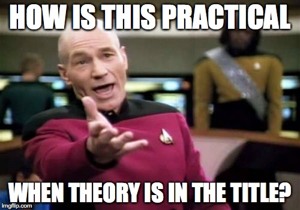

source('./src/blank_lines.R')1 Probability Spaces
Probability is a system of reasoning about the world in the face of incomplete information. In this course, we’re going to develop an understanding of the implications of core parts of this theory, how this theory was developed, and how these implications relate to every other part of the practice of data science.

1.1 Learning Objectives
At the end of this week’s learning, student will be able to:
- Find and access all of the course materials;
- Develop a course of study that is builds toward success;
- Apply the axioms of probability to make a valid statement;
- Solve word problems through the application of probability and math rules.
1.2 Course Learning Objectives
At this point in the course, there is so much that is before us! As we settle in to study for the semester, it is useful to have a point of view of where we’re trying to go, and what we are going to see along the way.
Allow a justification by analogy:
Suppose that you decide that you would like to be a chef – all of the time watching cooking shows has revealed to you that this is your life’s true calling – and so you enroll in a culinary program.
One does not begin such a program by baking croissants and souffle. They begin the program with knife skills, breaking down ingredients and the basic techniques that build up to produce someone who is not a cook, but a chef – someone who can combine ingredients and techniques to produce novel ideas.
At the same time, however, one has not gone to school just to become a cucumber slicer. The knife skills are instrumental to the eventual goal – of being a chef – but not the goal itself.
At the beginning of the program, we’re teaching these core, fundamental skills. How to read and reason with mathematical objects, how to use conditional probability with the goal of producing a model, and eventually, eventually to create novel work as a data scientist.
At the end of this course, students will be able to:
1.2.1 Understand the building blocks of probability theory that prepare learners for the study of statistical models
- Understand the mathematical objects of probability theory and be able to apply their properties.
- Understand how high-level concepts from calculus and linear algebra are related to common procedures in data science.
- Translate between problems that are defined in business or research terms into problems that can be solved with math.
1.2.2 Understand and apply statistical models in common situations
- Understand the theory of statistics to prepare students for inferrential statements.
- Understand model parameters and high level strategies to estimate them: means, least squares, and maximum likelihood.
- Choose an appropriate statistic, and conduct a hypothesis test in the Neyman-Pearson framework.
- Interpret the results of a statistical test, including statistical significance and practical significance.
- Recognize limitations of the Neyman-Pearson hypothesis testing framework and be a conscientious participant in the scientific process
1.2.3 Analyze a research question using a linear regression framework
- Explore and wrangle data with the intention of understanding the information and relationships that are (and are not) present
- Identify the goals of your analysis
- Build a model that achieves the goals of an analysis
1.2.4 Interpret the results of a model and communicate them in manner appropriate to the audience
- Identify their audience and report process and findings in a manner appropriate to that audience.
- Construct regression oriented reports that provide insight for stakeholders.
- Construct technical documents of process and code for collaboration and reproducability with peer data scientists.
- Read, understand, and assess the claims that are made in technical, regression oriented reports
1.2.5 Contribute proficient, basic work, using industry standard tools and coding practices to a modern data science team.
Demonstrate programming proficiency by translating statistical problems into code. 1. Understand and incorporate best practices for coding style and data carpentry 2. Utilize industry standard tooling for collaboration
1.3 Introductions
1.3.1 Instructor Introductions
The instructors for the course come to the program, and to statistics from different backgrounds. Instructors hold PhDs in statistics, astrophysics, biology, political science, computer science, and information.
1.3.2 What does a statistician look like? You!
Identity shapes how people approach and understand their world.
We would like to acknowledge that we have limited diversity of identity among the instructors for this course. We each have been fortunate to be able to study, but we want to acknowledge that the education system in the US has systematically benefited the hegemonic groups and marginalized others voices.
Every one of the instructors shares a core identity as an empathetic educator that wants to understand your strengths, areas for growth, and unique point of view that is shaped by who you are. We want to see a field of data scientists who embrace each others voices, and respects people for the identies that they hold.
- It doesn’t matter if you’ve never taken a stats class before, or if you’re reviewing using this class. There will be challenges for everyone to overcome.
- It doesn’t matter how old or young you are. We will all be learning frequentist statistics which is timeless.
- The color of your skin doesn’t matter; nor does whether you identify as a woman or a man or trans or non-binary; neither does your sexual orientation. There are legacies of exclusion and discrimination against people due to these identities. We will not continue to propagate those legacies and instead will work to controvert those discriminations to build a diverse community of learning in line with the University’s Principles of Community.
1.4 Student Introductions [Breakout One]
In a breakout room of between three and four students introduce yourself!
Breakout One. A name story is the unique, and individual story that describes how you came to have the name that you do. While there may be many people are called the same thing, each of their name stories is unique.
Please share: What is your name story?
1.5 Student Introductions [Breakout Two]
In the same breakout room:
Breakout Two. Like our names, the reasons that we joined this program, our goals and our histories are different.
Please share: What is your data science story? How did you wind up here, in this room today?
1.6 Probability Theory
Probability
Probability is a system of reasoning that we use to model the world under incomplete information. This model underlies virtually every other model you’ll ever use as a data scientist.

In this course, probability theory builds out to random variables; when combined with sampling theory we are able to develop p-values (which are also random variables) and an inferential paradigm to communicate what we know and how certain a statement we can make about it.
In introduction to machine learning, literally the first model that you will train is a naive bayes classifier, which is an application of Bayes’ Theorem, trained using an iterative fitting algorithm. Later in machine learning, you’ll be fitting non-linear models, but at every point the input data that you are supplying to your models are generated from samples from random variables. That the world can be represented by random variables (which we will cover in the coming weeks) means that you can transform – squeeze and smush, or stretch and pull – variables to heighten different aspects of the variables to produce the most useful information from your data.
As you move into NLP, you might think of generative text as a conditional probability problem: given some particular set of words as an input, what is the most likely next word or words that someone might type?
Beyond the direct instrumental value that we see working with probability, there are two additional aims that we have in starting the course in the manner.
First, because we are starting with the axioms of probability as they apply to data science statistics, students in this course develop a much fuller understanding of classical statistics than students in most other programs. Unfortunately, it is very common for students and then professionals to see statistics as a series of rules that have to be followed absolutely and without deviation. In this view of statistics, there are distributions to memorize; there are repeated problems to solve that require the rote application of some algebraic rule (i.e. compute the sample average and standard deviation of some vector); and, there are myriad, byzantine statistical tests to memorize and apply. In this view of statistics, if the real-world problem that comes to you as a data scientist doesn’t clearly fit into a box, there’s no way to move forward.
Statistics like this is not fun.
In the way that we are approaching this course, we hope that you’re able to learn why certain distributions (like the normal distribution) arise repeatedly, and why we can use them. We also hope that because you know how sampling theory and random variables combine, that you can be more creative and inventive to solve problems that you haven’t seen before.
The second additional aim that we have for this course is that it can serve as either an introduction or a re-introduction to reading and making arguments using the language of math. For some, this will be a new language; for others, it may have been some years since they have worked with the language; for some, this will feel quite familiar. New algorithms and data science model advancements nearly always developed in the math first, and then applied into algorithms second. In our view, being a literate reader of graduate- and professional-level math is a necessary skill for any data scientist that is going to keep astride of the field as it continues to develop and these first weeks of the course are designed to bring everyone back into reading and reasoning in the language.
1.7 Axiomatic Probability
The book makes a point of defining our axioms of probability, calling them them
Kolmogorov Axioms
Let \(\Omega\) be a sample space, \(S\) be an event space, and \(P\) be a probability measure. Then, \((\Omega, S, P)\) is a probability space if it satisfies the following:
- Non-negativity: \(\forall A \in S, P(A) \geq 0\), where \(P(A)\) is finite and real.
- Unitarity: \(P(\Omega)=1\).
- Countable additivity: if \(A_1, A_2, A_3, \dots \in S\) are pairwise disjoint, then
\[ P(A_1 \cup A_2 \cup A_3 \cup \dots) = P(A_1) + P(A_2) + P(A_3) = \sum_{i}P(A_{i}) \]
There is a lot going on in this definition!
First things first, these are the axioms of probability (read aloud in the booming voice of a god).
This means that these are things that we begin from, sort of the foundational principles of the entire system of reasoning that we are going to use. In the style of argument that we’re going to make, these are things that are sort of off-limits to question. Instead, these serve as the grounding assumptions, and we see what happens as we flow forward from these statements.
Second, and importantly, from these axioms there are a very large set of things that we can build. The first set of things that we will build are probability statements about atomic outcomes (Theorem 1.1.4 in the book), and collections of events. But, these statements, are not the only thing that we’re limited to. We can also build Frequentist Statistics, and Bayesian Statistics and Language Models.
In many ways, these axioms are the fundamental particles that hold our system of probabilistic reasoning together. These are to probability what the fermions and and bosons are to physics.
1.8 Definition vs. Theorem
What is the difference between a definition and a theorem? On pages 10 and 11 of the textbook, there is a rapid fire collection of pink boxes. We reproduce them here (notice that they may have different index numbers than the book – this live session book autoindexes and we’re not including every theorem and definition in this live session discussion guide).
Conditional Probability For \(A, B \in S\) with \(P(B) > 0\), the conditional probablity of \(A\) given \(B\) is \[P(A|B) = \frac{P(A\cap B)}{P(B)}.\]
Multiplicative Law of Probability For \(A, B \in S\) with \(P(B) > 0\), \[P(A|B)P(B) = P(A \cap B)\]
Baye’s Rule For \(A, B \in S\) with \(P(A) > 0\) and \(P(B) > 0\), \[P(A|B) = \frac{P(B|A)P(A)}{P(B)}.\]
- What would happen to the statement of the Multiplicative Law of Probability if we did not have the definition of Conditional Probability?
- How does one get from the definition, to the law?
- Can one get to Baye’s Rule wihtout using the Multiplicative Law of Probability?
1.9 Working with a Sample Space
As a way to begin lets define terms that we will use for the next activities.
Group Discussion Question
- What is the definition of a sample space?
- What is the definition of an event?
- How are sample spaces, and event spaces related?
1.9.1 Working with a Sample Space, Part I
- You roll two six-sided dice:
- How would you define an appropriate sample space, \(\Omega\)?
- How many elements exist in \(\Omega\)?
- What is an appropriate event space, and how many elements does it have?
- Give an example of an event.
1.9.2 Working with a Sample Space, Part II
- For a random sample of 1,000 Berkeley students:
- How would you define an appropriate sample space, \(\Omega\)?
- How big is \(\Omega\)? How many elements does it contain?
- What is an example of an event for this scenario?
- Can a single person be represented in the space twice? Why or why not?
1.10 Independence
The book provides a (characteristically) terse statement of what it means for two events to be independent of one another.
Independence of Events Events \(A, B \in S\) are independent if \[P(A \cap B) = P(A)P(B)\].
In your own words:
- What does it mean for two events to be independent of one another?
- How do you know if two events are independent of one another?
- How do you test if two events are independent of one another?
Try using this idea of independent in two places:
- Suppose that you are creating a model to predict an outcome. Further, suppose that two events \(A\) and \(B\) are independent of one another. Can you use \(B\) to predict \(A\)?
- If two events, \(A\) and \(B\) are independent, then what happens if you work through a statement of conditional probability, \(P(A|B)\)?
1.11 A practice problem
The last task for us to complete today is working through a practice problem on the course practice problem website. Please, click the link below, and follow us over to the the course’s practice problem website.
1.12 Student Tasks to Complete
Before next live session, please complete the homework that builds on this unit. There are two parts, an applied and a proof part. You can submit these homework as many times as you like before the due date (you will not receive feedback), and you can access this homework through bCourses.
The applied homework will be marked either Correct or Incorrect without partial credit applied. These are meant to be problems that you solve, and that have a single straightforward solution concept. The proof homework will be marked for partial credit (out of three points) that evaluates your argument for your solution concept.